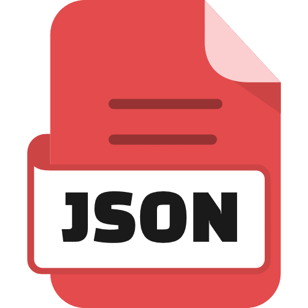

I`m Darko
Mashkovski
- Introduction
Front-end Developer
I Have graduate at Faculty of Information and Communication
Technologies in Bitola, where I gained different knowledge from the IT department.
I have 1 year of experience as a front-end developer in Javen Advertajzing and Inellipse where I worked on real projects.
I'm interested in new ways of working.
maksovski22@gmail.com
- Phone
+389 78 622 559
Education
Faculty of Informatics and Communication Technologies
University/College
During my studies, I delved into various programming languages like C++, Java, and C#, gaining a solid grasp of their core principles and syntax. Additionally, I explored the basics of web programming, familiarizing myself with HTML, CSS, and JavaScript.
My coursework also covered relational databases and network systems, where I learned about database design and management, as well as the fundamentals of network architecture and protocols.
During a summer internship, I had the opportunity to put my skills into practice, gaining hands-on experience and further refining my abilities. This experience not only enhanced my technical skills but also taught me the importance of teamwork and communication in a professional setting.
Javen Advertajzing Academy
Academy/Front End Developer
During the Front-End Developer Academy, I gained knowledge of HTML, CSS, JS, Bootstrap and WordPress.
Final project
For my academy's final project, I created an online supplement store comprising three main pages: Home, Shop, and About Us.
The Home page features promotions, popular supplements, and an educational section.
On the Shop page, users can view and order products fetched from a mock API, with sorting and categorization options available.
Orders are seamlessly managed through the admin page, where I can edit orders and client accounts.
The About Us page provides insight into the store's mission and values.
This project not only demonstrates my technical skills but also underscores my ability to create user-friendly interfaces and streamline backend processes for optimal functionality.


- 


.png)
.png)


.png)


Expirience
javen advertajizin
internship
During my internship at Javen Advertising, I was involved in multiple real WordPress projects.
This hands-on experience allowed me to contribute to the development of online stores, course purchasing websites, and event posting platforms.
Through these projects, I not only enhanced my technical skills but also gained valuable insights into teamwork dynamics and client communication.
https://tbmgroup.eu/
https://gsgmotors.mk/
https://mojaakusherka.mk/
javen advertajizin
work on project
During my internship, I undertook a significant WordPress project that stood out in complexity compared to others.
This project provided me with an invaluable opportunity to deepen my understanding of WordPress development.
To meet the project requirements, I delved into PHP, making necessary code modifications to ensure functionality and correctness.
Through this experience, I expanded my skill set and gained confidence in handling intricate WordPress projects.
https://ferroconn.com/
Inellipse
During my three-month stint at Inellipse, I was immersed in a real project centered around Angular.
This experience not only sharpened my Angular skills but also introduced me to essential tools like Swagger for API documentation, Bitbucket and Git for version control, and Jira for project management.
Moreover, I began delving into Java Spring Boot for backend development during this time, successfully completing backend tasks.
This brief but intense period allowed me to gain valuable hands-on experience and adapt swiftly to new technologies and environments.